등 운동
-
풀 다운 운동
- 풀업
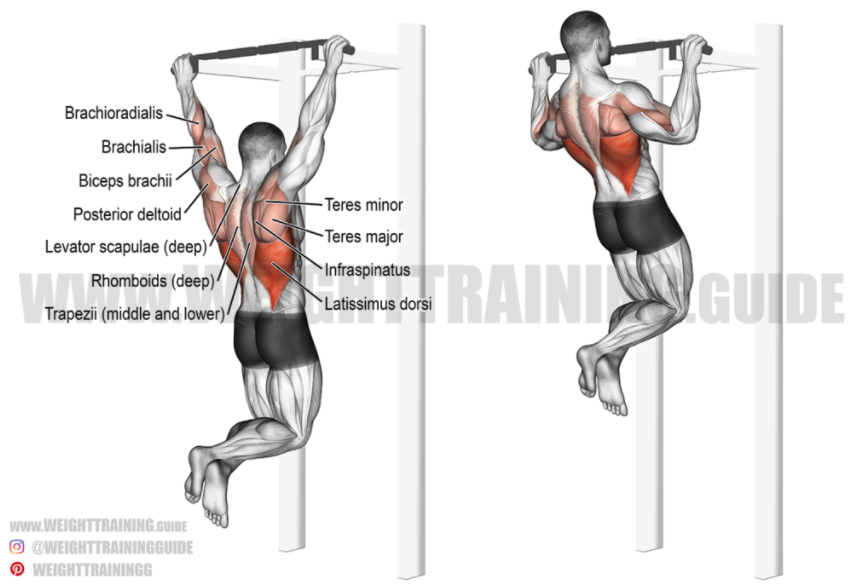 풀업 운동은 흔히 턱걸이 운동으로도 불린다. 자신의 체중을 정확한 자세로 들어올리기 때문에 초보자의경우 매우 어려운 운동 중 하나 이다. 팔 간격은 어깨보다 더 넓게 잡고, 팔의 힘 말고 등의 힘으로 당긴다는 느낌으로 수직으로 당겨주면된다.
- 랫 풀 다운
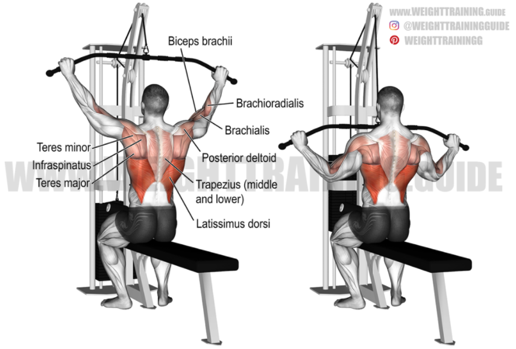 랫 풀 다운 운동은 광배근을 발달시킬 수 있는 고립운동으로 초보자들도 쉽게 머신을 이용해서 할 수 있다. 운동 방법은 바를 어깨보다 넓게 잡아주고, 호흡을 들이마신뒤 숨을 뱉으며 팔꿈치가 옆구리나 바닥을 찍는 느낌으로 약간(살짝)누우며 가슴윗부분으로 당겨준다. 숨을 다시 마시며 한번에 확 올리지말고 등의 이완을 느끼며 천천히 올라가 준다. 이렇게 등의 수축과 이완을 느끼며 반복해준다.
- 암 풀 다운
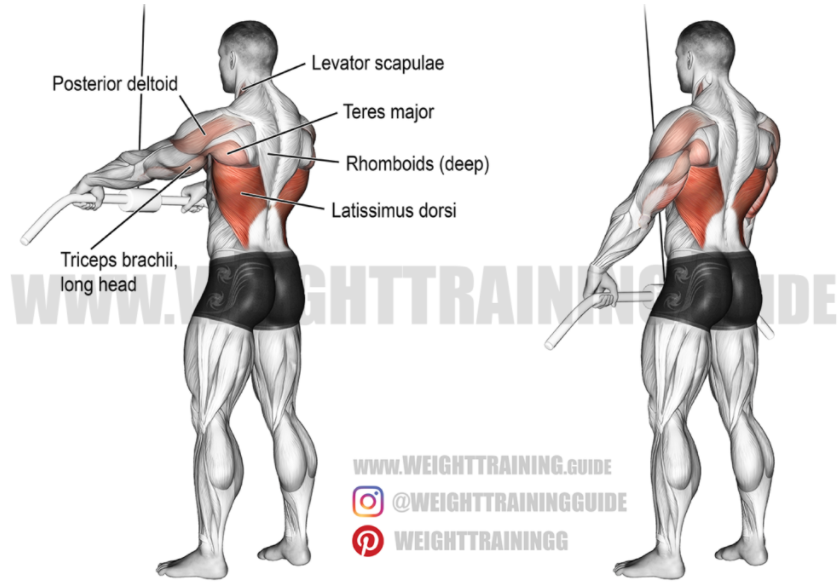 암 풀 다운 운동 또한 광배근과 같은 등근육을 발달 시킬 수 있고, 어깨 관절 하나만 활용해서 운동하기 때문에 정확한 자세로 할 시 초급자들이 쉽게 광배근의 사용을 느낄수 있는 운동이다. 운동 방법은 케이블에 일자바를 메달고 잡는다. 견갑골(날개뼈)를 후인 하강후 허리와 등이 구부러지지않게 흉추(가슴)을 열고 배꼽 쪽으로 당겨준다. 이후 다시 올릴때 천천히 광배의 자극을 느끼며 팔을 올려준다. 너무 올리게 될시 초급자의 경우 어깨의 개입이 클 수 있으므로, 어깨 위로 올리지 말고 자극을 찾기를 권장한다.
- 풀업
-
로우 운동
- 바벨 로우
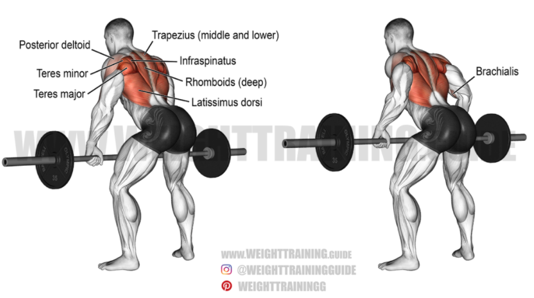 바벨로우는 등의 전체를 자극하는 운동이라고 말해도 과언이 아닌 정말 좋은 등운동이다. 초심자의 경우 기본자세를 잡기 힘드므로 등의 자극을 제대로 주기위해 연습이 필요하다. 바벨로우 같은경우에는 고중량을 다룰 수 있어 등근육의 두께증가와 입체감을 불어넣어줄 수 있는 운동이다. 운동 방법은 허리는 90도에 가까울 수록 좋지만 초심자의 경우 허리에 부담이 많이 갈 수 있기때문에 45도 정도 숙여준다. 이후 등 중앙부를 접는 다는 느낌으로 배꼽 쪽으로 당겨준다. 당길때 팔로 당긴다는 생각보다는 등으로 당긴다는 생각으로 수행해 주면 된다. 시선은 앞으로하고, 허리의 반동은 자제하여 허리와 하체의 자세를 유지해준다.
- 덤벨 로우
 덤벨로우는 바벨로우를 바벨 대신 덤벨을 사용하여 실시하는 운동이다. 바벨로우에 비해 강도는 낮으나, 비교적
동일한 효과를 가진다. 바벨의 특성인 고중량이나 제한된 컨트롤 범위가 부담스러울 때에도 덤벨을 이용 할 수 있다. 덤벨로우는
바벨을 대체한 로우 등운동으로써, 바벨에 비해 자유로운 가동범위를 확보한다는 점에서 이점을 자기고 있다. 덤벨로우 또한 광베근을 주로 타겟으로 하지만,
능형근, 승모근은 물론 어깨의 중심근육인 삼각근과 허리에있는 척추 기립근까지 강하게 만들 수 있다. 동작은 바벨로우와 동일 하다.
덤벨로우는 바벨로우를 바벨 대신 덤벨을 사용하여 실시하는 운동이다. 바벨로우에 비해 강도는 낮으나, 비교적
동일한 효과를 가진다. 바벨의 특성인 고중량이나 제한된 컨트롤 범위가 부담스러울 때에도 덤벨을 이용 할 수 있다. 덤벨로우는
바벨을 대체한 로우 등운동으로써, 바벨에 비해 자유로운 가동범위를 확보한다는 점에서 이점을 자기고 있다. 덤벨로우 또한 광베근을 주로 타겟으로 하지만,
능형근, 승모근은 물론 어깨의 중심근육인 삼각근과 허리에있는 척추 기립근까지 강하게 만들 수 있다. 동작은 바벨로우와 동일 하다.
- 시티드 로우
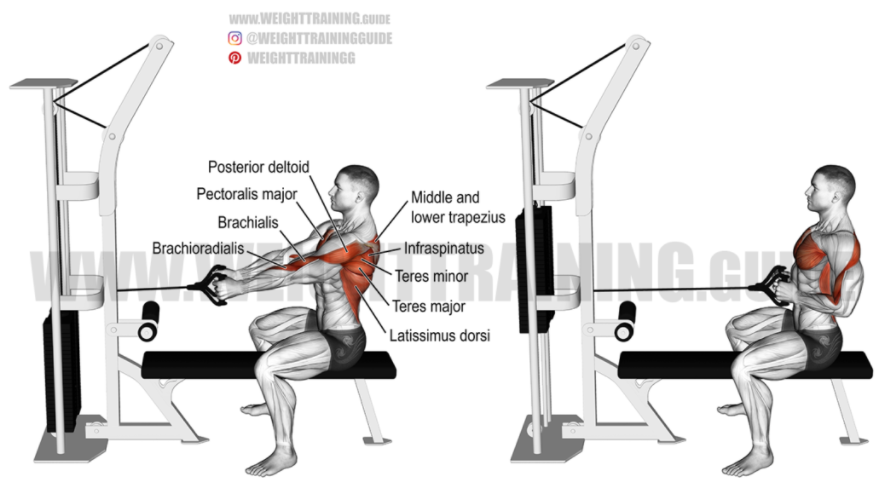 시티드로우 운동은 케이블, 롱풀머신에서 운동이 가능하다. 자극 부위는 자세에 따라 다르지만 보통 광배근과 승모근을 타겟으로 운동해준다. 허리를 피고 가슴을 연후 몸의 과도한 반동없이 등으로 당겨주면된다. 이후 이완할 때는 모든운동이 마찬가지지만 보디빌딩식의 운동을 할 경우 천천히 이완하면서 근육의 지속적인 긴장을 주는것이 중요하다.기립근 운동
- 루마니안 데드 리프트
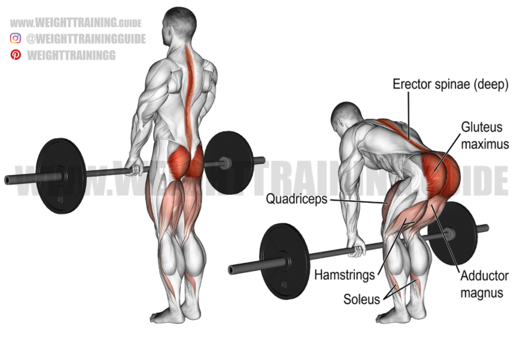 데드리프트에는 컨벤셔널 데드리프트, 스모데드리프트와 같은 데드리프트도 있지만 등운동을 할때 주로 루마니안 데드리프트를 자주 해준다. 다른 데드리프트와는 다르게 바닥에서부터 시작하지 않고 바를 든 상태에서 시작해 준다. 이후 무릎 밑쪽까지만 바를 내려준 후 다시 들어주는 운동이다. 자극 부위는 둔근(엉덩이), 햄스트링, 기립근, 대퇴 사두, 광배근에 줄 수 있지만 무게와 자세를 잘 컨트롤 할 경우 광배근, 기립근에 자극을 최대화 하고 둔근, 햄스트링, 퇴대사두에는 자극을 최소화 할 수 있다. 이를 위한 운동 방법은 허리는 중립을 유지한 상태에서 무릎까지만 바를 내려주고 올라오는데, 내릴 때 엉덩이는 허리에 부담이 되지 않는선 까지 만 뒤쪽으로 뺴주고 당길때 팔을 안쪽으로 짜준다는 느낌으로 수행을 하면 광배에 더 많은 자극을 느낄 수있다. 데드리프트는 전신성 운동으로 아주 좋은 운동이므로 루마니안이 아니더라도 꼭 해보기를 추천한다.
승모근 운동
- 슈러그
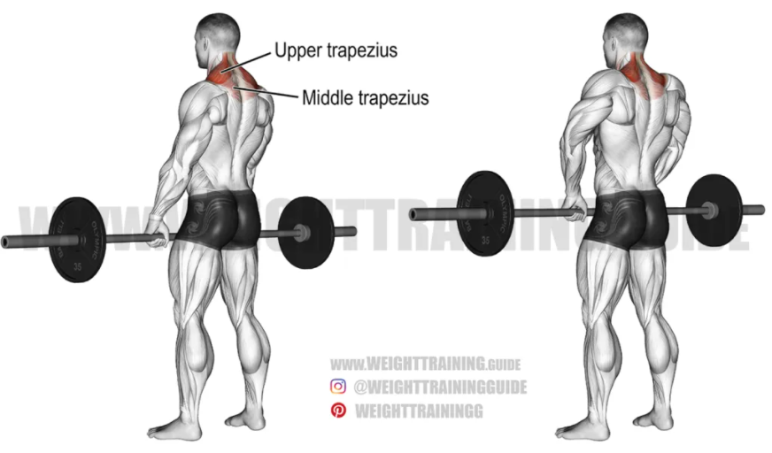 슈러그는 대표적인 승모근 운동이다. 보통 사람들은 승모근을 키우면 옷걸이 모양의 어깨가 될 까봐 잘 하지 않는 경향이 있는데, 이는 아주 잘못된 생각이다. 근육은 전신의 모든 근육들이 밸런스 있게 크기가 커졌을때 미적으로 아주 보기가 좋다. 또한 슈러그뿐아니라 운동을 아무리 한다고 일반인이 보디빌더처럼 거대한 근육을 가지게 된다는 것은 매우 힘든일이다. 승모근의 강화는 쳐진어깨를 승모근으로 잡아주어 오히려 쳐진 어깨를 개선 할 수 있고, 견갑골을 안정화 시켜 주고 등을 곧게 펴준다. 승모근은 등 상부의 50퍼센트 이상을 차지하라 정도로 매우 큰 근육이다. 그러므로 등의 입체감을 주기위해서 꼭 해야하는 운동이다. 운동 방법은 바벨을 어깨너비로 잡아준다. 이후 어깨를 으쓱해주면된다. 어깨의 경사가 바닥과 최소한 수평이 될때 까지 올려준 후 1-2초 가량 수축을해준다. 주의사항은 어깨를 돌리지 말고 바벨을 위 아래로 똑바로 움직여준다. 머리부터 척추까지 중립을 유지하고 팔은 편하게 놔두지만 바벨을 고정하고 있을만큼 긴장을 해준다. 또한 올릴때 팔꿈치가 구부러지지 않게 승모근으로 만 바벨을 올려준다.
팔 운동
-
이두박근
- 덤벨컬
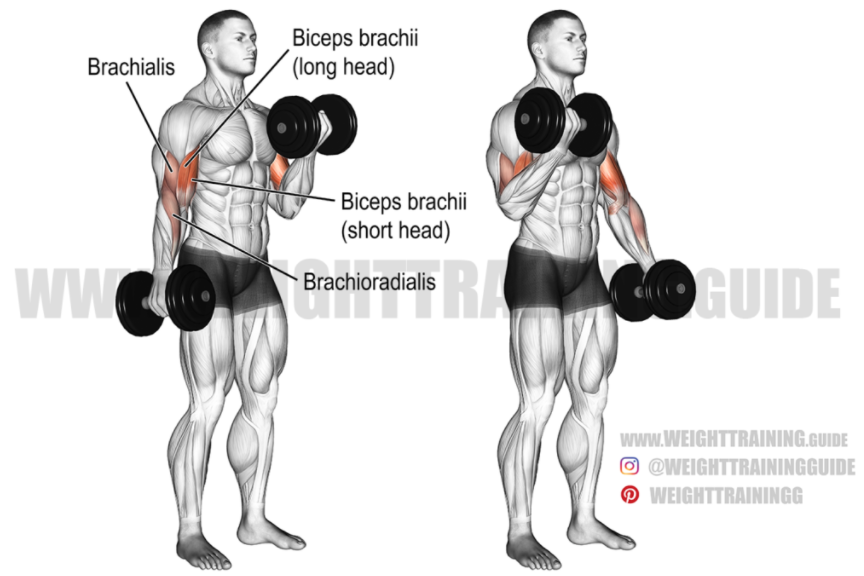 이두하면 생각나는 대표적인운동 덤벨컬이다. 우리가 흔히 말하는 알통부분이며 이두근을 고르게 키워준다. 운동 방법으로는 팔꿈치를 고정해주고 팔꿈치를 축으로 삼아 덤벨을 아래에서 위로 올려준다. 이때 무릎의 반동을 최소화 해주고, 이를 위해서 앉아서 하는 방법 또한 있다. 양쪽 팔을 동시에 드는 방법도 있지만 해당 되는 팔에 더 집중을 하고 싶은경우 한쪽씩 들어도 된다. 운동시 올리는 각도에 따라 다양한 자극을 줄 수 있다.
- 해머컬
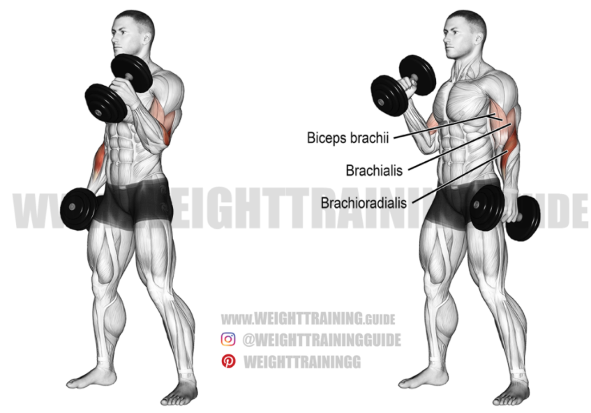 해머 컬의 경우 덤벨 컬과 비슷하지만 손목의 각도가 다르다. 덤벨을 세로로 잡아서 수행 해주면된다. 이두의 바깥쪽 근육인 장두운동에 효과적이고, 이두근과 삼두근 사이의 위치하는 근육을 발달시켜 주고, 이 근육이 성장할 시 이두근을 바깥쪽으로 밀어내서 봉우리 발달에도 효과적인 운동이다. 운동방벙은 덤벨 컬과 동일하나, 덤벨을 들어 올리며 각도를 신경써야하는 덤벨컬과는 달리 단순히 축을 고정해 올렸다 내렸다하는 운동이기 때문에 비교적 난이도가 쉬운 운동이다.
- 리버스 컬
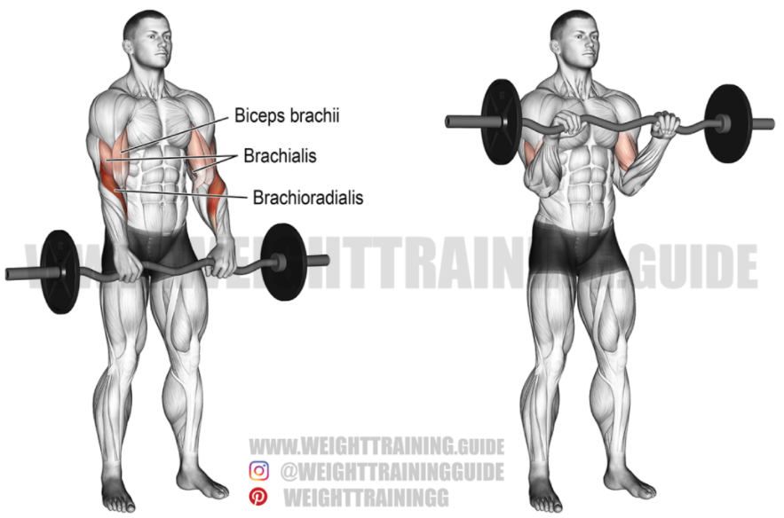 리버스 컬은 팔운동시 가장 도외시 되는 운동이다. 그렇지만 근육의 불균형으로 인해 다치기 쉬운 손목 주변의 관절을 단련시키는 데 매우 효과적이므로, 권투 선수들의 트레이닝 프로그램으로도 많이 사용된다. 자극부위는 이두근과 전완근이다. 운동 방법은 다리를 자연스럽게 벌리고 서서, 오버그립으로 바벨을 잡는다. 가슴위까지 바벨을 올리고 다시 원상태로 돌아온다. 바벨을 올리고 내릴때는 앞에 덤벨 컬에서 알려준 내용과 같이 팔꿈치를 축으로 움직여주면된다.
- 바벨컬
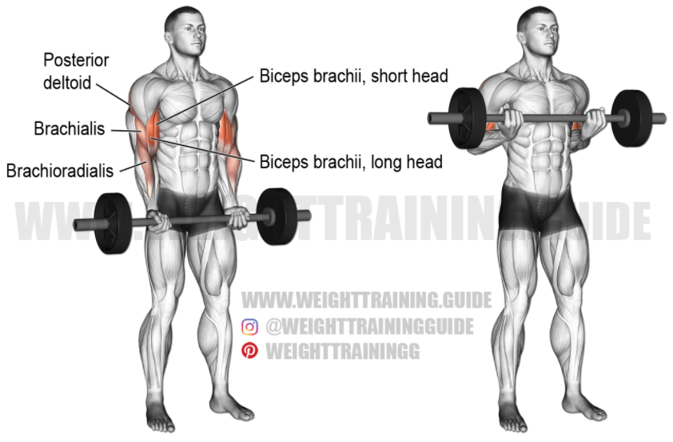 이두 운동하면 대표적인운동 중 하나인 바벨컬이다. 덤벨 컬과 운동 부위, 운동 방법은 동일하다. 하지만 바벨을 이용해서 하는 운동이니 만큼 고중량을 다룰 수 있고, 덤벨 컬에 비해 고립도 잘 되기 때문에 초심자 부터 숙련자까지 모두 애용하는 운동 이다.
- 덤벨컬
-
삼두박근
- 케이블 로프 푸쉬 다운
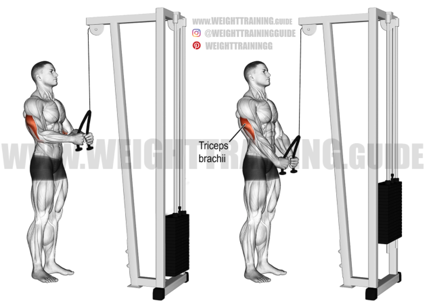 팔근육을 두껍게 하려면 전면부의 알통 이두근과 함께 후면부에 위치한 삼두근을 키워야한다. 언뜻 보면 뒷면에 있어서 영향이 없을거라고 생각할수 있지만, 삼두근을 키우지 않으면 두꺼워보이는 팔근육을 가질 수 없다. 케이블 로프 푸쉬다운은 케이블에 로프를 단 다음 로프를 잡아 아래쪽으로 내리며 삼두에 자극을 주는 운동이다. 이 운동도 마찬가지로 팔꿈치를 고정한 후 팔꿈치를 축으로 아래로 내려주면된다. 운동 방법은 상체를 조금숙이고 팔꿈치는 옆구리에 고정시켜준다. 가슴을 편 상태로 손을 ㅅ자를 만들어준다. 팔꿈치는 지속적으로 고정된 상태를 유지하며 그대로 삼두를 신전시켜주면된다. 이때 어깨말림, 허리말림, 과도한 팔꿈치의 흔들림은 주의해주면 된다. 이 운동의 장점은 강한 수축으로인해 삼두근이 찢어지는 듯한 자극을 고반복으로 가져갈 수있다. 이운동은 삼두의 외측두 발달에 도움을 준다.
- 라잉 트라이셉스 익스텐션
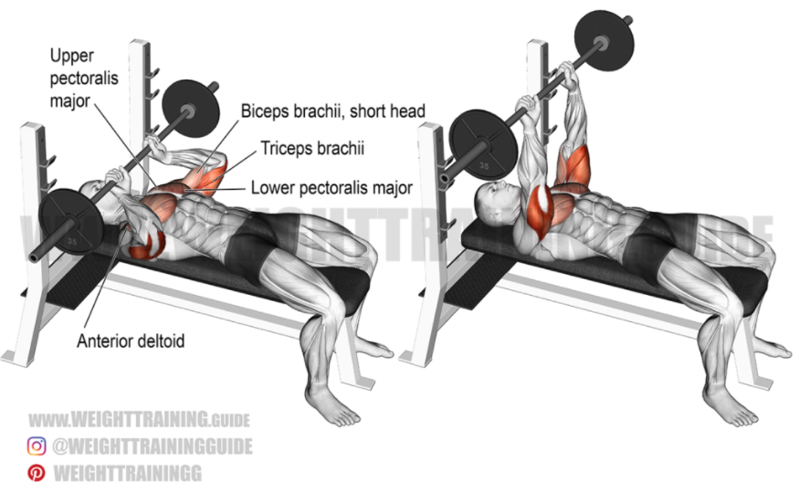 삼두근 운동 가운데서도 라잉 트라이셉스 익스텐션은 삼두근의 근매스에 특히 효과적인것으로, 가장 많이 수행되는 운동이기도 하다. 하지만 난이도가 꽤 어려운 편에 속해서 초보자들이 섣불리 실시했다가는 잘못된 자세로 수행할 가능성이 크다. 올바른 방법을 익혀야한다. 라잉 트라이셉스 익스텐션은 기본 트라이셉스 익스텐션의 종류에 속하는것으로, 기본 트라이셉스 익스텐션은(오버헤드 방법) 본래 상체를 세우고 덤벨을 잡은 팔을 뒷쪽으로 굽히는 운동법이다. 이 운동은 삼두근 중 장두의 발달에 효과적이며 팔뚝살의 탄력을 높일때 좋다. 라잉 운동법은 바벨을 어깨보다도 좁게 잡아야한다. 잡은 뒤에는 바벨을 위로 들어주는데, 이때 위치는 이마쪽에 위치할수 있도록 팔의 각도를 비스듬히 하여 올려준다. 윗쪽의 팔과 팔꿈치는 움직이지 않고 고정하면서 그대로 굽혀 머리 윗쪽으로 천천히 바벨을 내려준다. 바벨, 덤벨 기구를 내리고 다시 들때는 기구를 미는 느낌으로 운동해야 삼두근을 이용할수 있다. 다른 근육의 힘을 많이 개입시키지 않고 삼두근을 사용해야 하기 때문에 단순히 내리고 드는 느낌보다는 기구를 밀어내는것처럼 운동하면 더욱 도움이 될수있다.
- 오버헤드 익스텐션
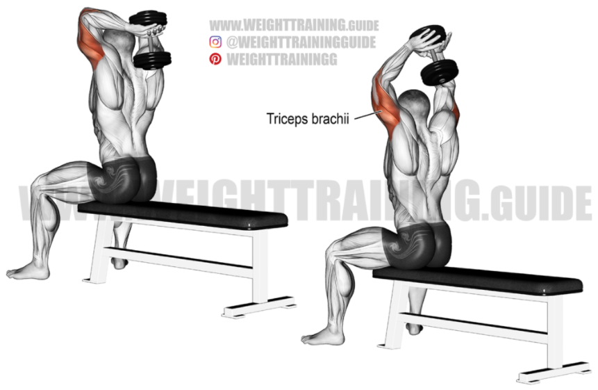 오버 헤드 익스텐션 운동은 머리 위로 덤벨을 올려 삼두를 자극해 주는 운동이다. 운동방법은 양손으로 덤벨을 잡고 머리뒤로 넘겨준다. 이후 팔꿈치는 직각으로 만들며 내려주고 삼두의 힘을 느끼며 덤벨을 들어올려준다. 다시 삼두근의 저항을 느끼며 팔꿈치가 직각이 될때 까지 천천히 덤벨을 내려주는 행위를 반복해주면된다. 주의사항은 허리를 바르게 펴고 몸이 수직이 되야한다. 팔꿈치를 고정하고 과도하게 벌어지건나 모이지 않게 자연스럽게 해준다.
- 킥백
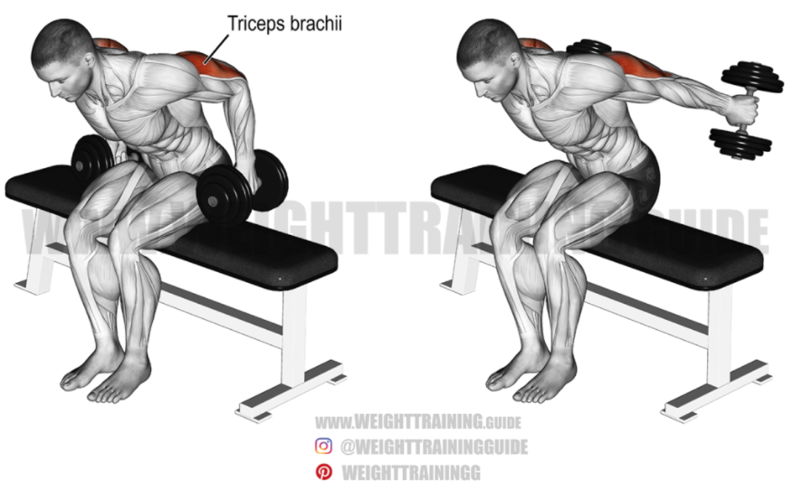 덤벨 킥백은 삼두 바깥쪽에 특히 효과적이며 기본적으로 삼두를 골고루 발달 시켜준다. 운동 방법은 의자에 앉거나 엎드린 자세를 취해준 후 팔을 뒤로 쭉 펴주면 된다. 딱히 어려울 것이 없는 운동으로, 팁을 드리자면 덤벨을 밀어낸다는 느낌으로 실시하면 좋다. 몸통과 팔이 너무 떨어지거나 흔들리지 않게 잘 고정 시켜주면 좋다.
- 케이블 로프 푸쉬 다운
- 덤벨 로우
- 바벨 로우